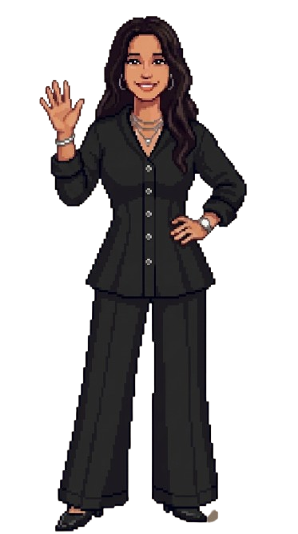
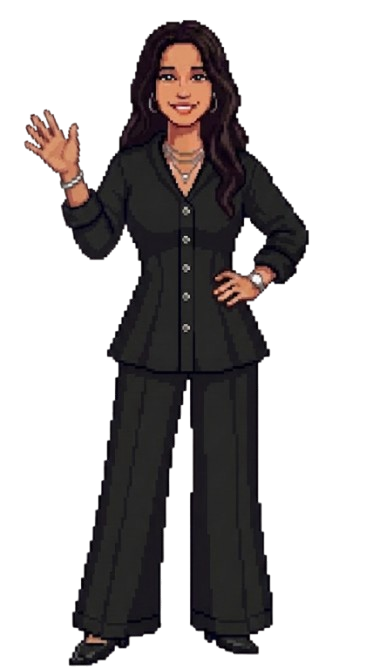

KaRitim
Taşınabilir kalp ritmi ve SpO₂ takibine yönelik geliştirdiğimiz teknoloji prototipi.


Bilişim Teknolojileri eğitimiyle başlayan yolculuğum; teknoloji projeleri, girişimcilik çalışmaları ve farklı ekiplerde edindiğim deneyimlerle devam ediyor. Üretiyor, öğreniyor ve yaptıklarımı paylaşarak ilerliyorum.

Ben Nehir. Bilişim Teknolojileri – Yazılım Geliştirme alanında eğitim aldım. Lise yıllarımdan itibaren teknoloji projeleri, yarışmalar, girişimcilik programları ve ekip çalışmalarında yer aldım. Bugün farklı alanlarda edindiğim deneyimleri bir araya getirerek hem teknik hem de üretim tarafında kendimi geliştirmeye devam ediyorum.
[ Hikayemi Oku ]Bir fikri yalnızca konuşmak yerine denemeyi, bir şey bilmediğimde öğrenmeyi ve başladığım işi mümkün olduğunca somut bir çıktıya dönüştürmeyi seviyorum.
Bu yüzden bugüne kadar yazılımdan girişimciliğe, proje çalışmalarından dijital üretime kadar farklı alanlarda kendimi denedim.
Taşınabilir kalp ritmi ve SpO₂ takibine yönelik geliştirdiğimiz teknoloji prototipi.
Topraktaki verimliliğin bağlı olduğu kimyasal elementleri optik şekilde kabul edilebilir hata payıyla algılayan sensör
İki farklı projeyle sözlü sunum aşamasına kadar ilerleyen çalışmalar.
Bugüne kadar farklı çalışma ortamlarında ve proje ekiplerinde yer alarak teknoloji, insan kaynakları, girişimcilik ve proje geliştirme alanlarını deneyimleme fırsatı buldum.
Profesyonel çalışma hayatındaki ilk önemli deneyimlerimden biri Turkcell Global Bilgi'de İnsan Kaynakları ve işe alım süreçlerinde gerçekleştirdiğim staj oldu. Bu süreçte kurumsal bir çalışma ortamını, ekip içi iletişimi ve operasyonel süreçleri yakından tanıdım.
Sonraki dönemde girişimcilik ve proje geliştirme çalışmalarında daha aktif rol alarak farklı ekiplerle çalıştım, projelerin geliştirilmesi ve sunulması süreçlerinde sorumluluk üstlendim.
Bu deneyimler bana tek bir alanda uzmanlaşmaktan önce farklı alanları tanımanın ve kendi güçlü yönlerimi keşfetmenin ne kadar değerli olduğunu gösterdi.
Fiziksel arşiv sistemlerinin düzenlenmesi, belgelerin dijital ortama aktarılması, personel evraklarının kontrolü ve sınıflandırılması, doküman ve veri kontrol süreçleri ile kurumsal operasyon takibi.
Proje iş süreçlerinin planlanması ve koordinasyonu, görev dağılımı ve iş takibi, ekip üyeleri arasındaki iletişim yönetimi, proje dokümantasyonu ve operasyonel süreç takibi.
Projeleriniz, operasyonel süreçleriniz veya dijital içerik ihtiyaçlarınız için benimle iletişime geçebilirsiniz.